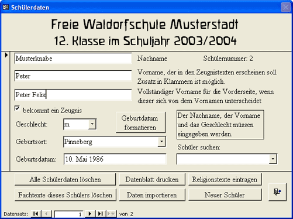
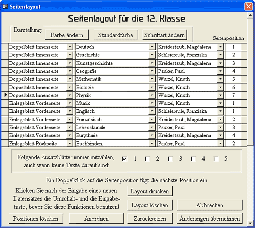
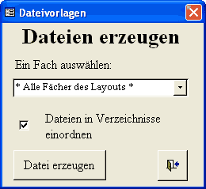
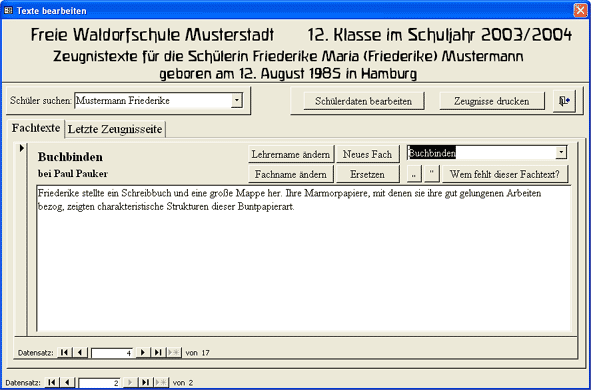
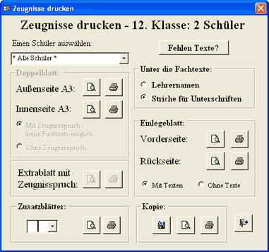

Texel-Hilfe

Einleitung
Beispiele
Überblick
Installation
Organisation
Einstellungen
Schülerdaten
Layout
Dateivorlagen
Schreiben
Einlesen
Korrigieren
Ausdrucken
Lückentexteditor
Kontakt
Eine Zeugnisverwaltung für Waldorfschulen
Von den vielen Möglichkeiten, die das Programm bietet,
sind hier nur die wichtigsten Schritte beschrieben:
Schülerdaten verwalten
Zeugnislayout festlegen
Vorlagedateien erstellen
Zeugnistexte eingeben
Texte einlesen und korrigieren
Texte einlesen und ausdrucken
Schülerdaten verwalten:
Zunächst werden die Daten der Schüler eingeben oder aus einer vorhandenen Datenbank übernommen. Natürlich können die Daten in den kommenden Schuljahren wiederverwendet werden.

Inhalt
Zeugnislayout festlegen:
Nun werden die Fächer und die Lehrernamen für jede Zeugnisseite festgelegt. Die Seitenzuordnung kann später vor dem Ausdrucken noch geändert werden.

Inhalt
Vorlagedateien erstellen:
Als Nächstes wird für jedes Fach im Layout eine Vorlagedatei erstellt und klassenübergreifend nach den verschiedenen Lehrern in Verzeichnisse sortiert. Die Dateien brauchen dann nur noch auf Disketten kopiert und den Lehrern ausgehändigt werden.

Inhalt
Zeugnistexte eingeben
Bei den Dateien für jedes Fach handelt es sich um einfache Textdateien, in die die Kollegen ihre Fachtexte unter jeden Schülernamen eintragen. Dazu eignet sich jeder Texteditor, aber natürlich auch Microsoft-Word. Am Anfang kann ein Vortext stehen, der jedem Schülertext vorangestellt wird. Es gibt vielfältige Möglichkeiten mit Platzhaltern und Lückenfunktionen zu arbeiten. Besonders einfach ist das mit einem separaten Programm, dem Lückentexteditor Lucky, der diese Dateien bearbeiten kann.
|
Texte einlesen und korrigieren:
Nachdem alle Texte von den verschiedenen Texten eingelesen wurden - dabei können vom Programm auch noch automatisch verschiedene Korrekturen ausgeführt werden -, müssen noch die Fehlzeiten und weitere Angaben gemacht werden. Zur Erhebung dieser Daten können spezielle Formulare ausgedruckt werden. Nun werden alle Zeugnisse zunächst zum Korrekturlesen in Schwarz auf A4-Papier ausgedruckt. Die nötigen Korrekturen erfolgen dann in einem Formular der Zeugnisverwaltung.

Inhalt
Texte drucken:
Zum Drucken der Doppelbögen ist natürlich ein A3-Drucker notwendig. Je nach der Länge der Texte muss jetzt eventuell noch das Layout so geändert werden, dass die Texte auf die Seiten passen. Für einzelne Blätter kann das Layout aber auch noch verdichtet oder eine kleinere Schriftgröße gewählt werden. Passen die Fachtexte nicht auf das Einlegeblatt und dessen Rückseite, können Zusatzblätter eingerichtet werden.

Inhalt